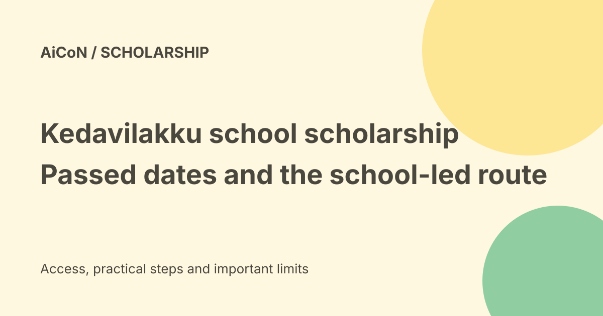

Kedavilakku 2026-27: school route, passed dates and rule checks
Kerala’s official e-Grantz notice lists 30 September 2026 for the Kedavilakku 2026-27 scholarship. That date has passed. This guide explains the school route and corrects the earlier post’s impression that every student should apply directly online up to that date. No extension was verified.

What is Kedavilakku?
Kedavilakku is a school scholarship administered by Kerala's Backward Classes Development Department. The official August amendment names OBC students in Classes 1 to 8 at government and government-aided schools in the state.
OBC is a community classification used for this scheme. Being in a broad category is not enough by itself. The school must check the scheme's actual eligible-community list and other rules.
Current deadline status
The live official e-Grantz notice checked on 7 October still displays 30 September 2026. A date still printed on a notice is not proof that late entries are accepted.
Ask the school about your submitted application or a later department notice. Do not pay anyone who promises to reopen a closed round.
Student submission and school entry are different
A regional circular dated 24 August 2026, available as a copy linked by a teacher-information blog, distinguishes 31 August for applications received by schools from 30 September for school data entry. It names a family-income ceiling of ₹2.5 lakh.
That copy is useful context, but the downloaded copy is not hosted on a government domain. Its authenticity and any later changes should be checked with the school. The government-hosted amendment and live portal independently confirm the scheme and the displayed September date, not every detail in that copied circular.
Why this is not a generic e-Grantz application
The portal's general introduction describes student registration and institutional assistance for several schemes. That does not mean every scheme follows the same individual-login steps.
For Kedavilakku, start with the school office. Ask who verifies the application, enters it and forwards it. A generic Aadhaar-and-date-of-birth tracking instruction should not be treated as the complete scheme workflow.
Amount and selection need a rule check
School and teacher-information pages describe ₹1,500 per year for selected students. Treat that as a reported scheme amount, not a guaranteed payment to everyone who applies.
The older official packet includes community lists and a school certificate mentioning a 90-percent score. Its current applicability, exceptions and the full 2026-27 selection rules were not independently settled by the short amendment. Ask for the operative circular rather than assuming all children in Classes 1 to 8 qualify automatically.
Documents to check with the school
Keep the child's school details, community evidence, applicable income certificate and bank information ready for verification. Confirm which documents this round actually requires and whether an existing certificate can be reused.
The older packet has a parent declaration and school verification. Do not sign blank forms or enter invented marks, income or community details. A copied form is not a substitute for the school's current requirements.
Bank and payment checks
e-Grantz describes direct transfer to the student's bank account. The school should check the account details and any applicable Aadhaar mapping requirements.
Aadhaar linking and payment mapping can be separate steps. Confirm the correct bank and account holder. Do not share a PIN, password, OTP or full bank login with a person offering help.
Is everything free?
No scholarship application fee was verified in the checked notice. That is different from saying all assisted entry, certificates and service-centre work cost nothing.
The portal links a government order on Akshaya assistance charges. That PDF did not load during this check, so no exact assisted-service fee is quoted here. Ask for the authorised charge and receipt before paying for help.
What to do now
- Contact the school that holds the child's application.
- Ask whether it was verified, entered and forwarded.
- Keep the acknowledgment or reference given by the school.
- Correct a mismatch through the school, not by creating another application.
- Check the official e-Grantz notice board for a later notice.
- If the school cannot settle it, ask the relevant BCDD regional office.
The official portal lists the BCDD directorate contact as 0471 2727378 and bcddkerala@gmail.com. No application, login or bank change was performed for this guide.
What changed since the original post?
The September date is now past. We distinguish student-to-school submission from school data entry, remove the blanket direct-online instructions and explain the limits of the available sources. Reported amounts and copied circular details are not presented as a complete current eligibility verdict.
Frequently asked questions
Can I still apply?
No extension was verified. Check a later official notice with the school.
Does OBC status guarantee selection?
No. Check the scheme list, rules and selection process.
Should I submit another form if payment is delayed?
First ask the school to check the existing entry and bank details.
Sources: Official e-Grantz notice board and contacts · Government-hosted August amendment · Older official packet: not proof of every current rule · Teacher-information page and linked regional copy · Regional circular copy, not government-hosted · Government assistance-charge order: failed to load. Checked 7 October 2026.